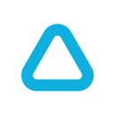
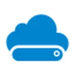
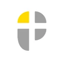

注文の伝えもれ、閉店後の締め、スタッフの給料計算。飲食店の毎日には、お会計のほかにもたくさんの仕事があります。POSレジを選ぶときは、レジの機能だけでなく、そのあとの仕事までどれだけ楽になるかが大事です。
この記事では、居酒屋・ラーメン・イタリアン・寿司・焼肉・カフェなどの飲食店向けPOSレジを、比較表と選び方とあわせて紹介します。
この記事の結論
- 1
 ポスポスQR注文・厨房から、打刻・シフト・給料・利益まで1つで
ポスポスQR注文・厨房から、打刻・シフト・給料・利益まで1つで - 2

Airレジ基本のレジ機能を0円で始めたい - 3

スマレジ無料プランから始めて、成長に合わせて上げたい - 4

POS+ foodハンディ・セルフオーダーをしっかり組みたい - 5ユビレジハンディやQRオーダーで注文まわりを整えたい
飲食店向けPOSレジとは
POSレジは、お会計をするだけでなく、「いつ・何が・いくつ売れたか」を記録して、売上の集計や分析までできるレジです。昔ながらのレジスターは計算とお金の出し入れが中心ですが、POSレジはタブレットやパソコンで動き、データがクラウドにたまっていきます。
飲食店向けのPOSレジには、卓の管理、注文（ハンディ・お客さまのスマホからのQR注文）、厨房への連絡、飲み放題やコースの時間管理など、飲食店ならではの機能がそろっています。
5つのPOSレジをひと目で比較
| サービス | 料金の目安 | 注文まわり | レジのあとの仕事 | サポート |
|---|---|---|---|---|
| ポスポス | お問い合わせ（1か月無料でお試し） | 卓の配置図・QR注文・厨房の画面・券売機 | 打刻・シフト・給料・前借り・利益・日報まで1つで | 年中無休・24時間受付 |
Airレジ | 基本のレジ機能・管理・サポートは0円 | 注文管理は関連サービス（Airレジ オーダー） | シフト管理などは関連サービス | サポート費用0円 |
スマレジ | 無料のスタンダードプランあり／フードビジネス 月額15,400円（税込） | フードビジネスプランにモバイルオーダー | プランやオプションで拡張 | 電話サポート（プランによる） |
POS+ food | お問い合わせ（見積もり） | ハンディ・セルフオーダー・キッチン連携・券売機連携 | 顧客・会員管理、複数店舗管理 | 365日のコールセンター・全国駆けつけ |
ユビレジ | 月額払い・年額払い（詳しくは公式） | ユビレジ ハンディ・QRオーダー＆決済 | 在庫管理などのサービス | 導入前・導入時・導入後のサポート |
表は横にスクロールできます。料金・機能は2026年10月時点の各社公式サイトの内容です。
飲食店のPOSレジにあると便利な機能
料金の考え方
POSレジの費用は、大きく分けて次の4つです。月額の安さだけでなく、全部を足した金額で比べましょう。
補助金の対象になっているPOSレジもあります。使えるかどうかは、各社に確認してみましょう。
POSレジを入れるメリットと、気をつけたいこと
失敗しない選び方5つ
- お店の業態と規模に合っているか個人店か、多店舗か。居酒屋のように注文が多いお店か、カフェのように回転が早いお店か。お店の形に合うかを見ましょう。
- 注文のしかたに合っているかハンディ、お客さまのスマホからのQR注文、券売機、テイクアウト。厨房への伝わり方も確認しましょう。
- 使いたい決済に対応しているか現金・クレジットカード・交通系IC・QR決済。手数料もあわせて見ましょう。
- レジのあとの仕事まで、ひとつで済むか打刻・シフト・給料、利益の確認。別々のサービスだと、同じことを何度も入れることになります。
- サポートとお試し営業中に困ったときにすぐ相談できるか。今ある端末で、お試しができるかも大事です。
おすすめのPOSレジ5選
ポスポス
合同会社AKITOグループ
- 居酒屋
- ラーメン
- イタリアン
- 寿司
- 焼肉
- カフェ
「かんたん、つながる、会計ソフト。」がコンセプトのPOSレジです。卓の受付・注文・会計から、お客さまのスマホからのQR注文、厨房の画面、券売機、さらに打刻・シフト・給料、利益の確認まで、お店の仕事をひとつにまとめられます。パソコン・タブレット・スマホのブラウザで動くので、アプリのインストールもいりません。
- 配置図で卓の受付・注文
- QR注文（ログイン不要）
- 厨房の画面・呼び出し
- 券売機・お持ち帰り
- 分けて払う・売掛
- ポイント・会員証（QR）
- 「こちらもいかがですか」
- ICカードで打刻・シフト
- 給料・前借り
- 利益・原価率・日報
- グループ店（5店舗まで）
- スタッフのスマホ画面
おすすめの理由
- QR注文から厨房までつながる。お客さまのスマホで注文すると、卓ごと・何回目の注文かがまとまって厨房の画面に届きます。「お会計をお願い」も厨房に届きます。
- 注文のあとに「こちらもいかがですか」。おすすめのメニューを出して、追加の注文につなげられます。
- 名前や電話番号を聞かずにポイントカード。会員証のQRでポイントを貯めて使えます。
- レジのあとの仕事もひとつで。打刻からシフト・給料の計算、利益（売上－手数料－人件費－仕入れ－経費）まで自動でまとまります。
料金はお店に合わせて個別にご案内しています。無料で1か月お試しできます。
Airレジ（エアレジ）
株式会社リクルート
- カフェ
- 小さな飲食店
- これからレジを入れるお店
公式サイトに書かれている主な特長
- 注文入力・会計などのレジ機能、商品管理、顧客管理、売上分析、会計ソフトとの連携
- 基本の機能・管理・分析・サポートは0円、初期費用・月額費用もかからない
- iPad・iPhoneとインターネットがあれば使える
- 注文管理・予約・シフトなどの関連サービスがある
こんなお店に：まずは費用をかけずにレジを始めたいお店に向いています。
出典：Airレジ 公式サイト
スマレジ
株式会社スマレジ
- カフェ
- 居酒屋
- 店舗を増やしていきたいお店
公式サイトに書かれている主な特長
- 基本的なPOSレジ機能を備えた無料のスタンダードプラン
- モバイルオーダーなど飲食向けの機能がそろった「フードビジネス」プラン（1店舗 月額15,400円・税込）
- ハンディ端末にも対応（フードビジネスプラン）
こんなお店に：小さく始めて、お店の成長に合わせてプランを上げていきたいお店に向いています。
POS+ food（ポスタスフード）
ポスタス株式会社
- 居酒屋
- 焼肉
- ラーメン
- 規模の大きめのお店
公式サイトに書かれている主な特長
- 会計に加えて、ハンディ・セルフオーダーなどの注文、調理連携、配膳管理に対応
- コース料理・飲み放題、テーブルの時間管理、食べ放題の運用
- 券売機やセルフオーダーとの連携
- 365日対応のコールセンター、全国駆けつけサポート
こんなお店に：ハンディやセルフオーダーをしっかり組み合わせたい、規模の大きめのお店に向いています。
ユビレジ
株式会社ユビレジ
- カフェ
- 居酒屋
- ITが苦手なお店
公式サイトに書かれている主な特長
- レジ機能・売上管理・顧客管理
- ユビレジ ハンディ、QRオーダー＆決済、在庫管理などのサービス
- 月額払いと年額払いを選べる
- 導入前・導入時・導入後のサポート
こんなお店に：ハンディやQRオーダーを組み合わせて、注文まわりを整えたいお店に向いています。
出典：ユビレジ 公式サイト
お店の種類別、見ておきたいポイント
導入の流れ
- お店の困りごとを書き出す注文・締め・給料など、いちばん時間がかかっている仕事を書き出します。
- 2〜3社に問い合わせ・お試し実際の画面を触って、スタッフが使えそうかを確かめます。
- メニューやスタッフを登録今のメニュー表やExcelから登録します。取り込みに対応しているかも確認しましょう。
- 少しずつ使いはじめるお会計から始めて、注文・打刻・給料と広げていくと、無理なく慣れられます。
よくある質問
POSレジとレジスターの違いは？
レジスターは計算とお金の出し入れが中心です。POSレジは、何が・いつ・いくつ売れたかを記録して、売上の集計や分析までできます。
タブレットがなくても使えますか？
POSレジによります。ポスポスはブラウザで動くので、パソコン・タブレット・スマホのどれでも使えます。
個人店でもPOSレジは必要ですか？
1人や少人数のお店ほど、締めや集計の時間を減らせる効果が大きくなります。無料やお試しから始められるサービスもあります。
今使っているレジから乗り換えられますか？
多くのPOSレジで乗り換えはできます。メニューや売上のデータをどう移すかは、各社に確認しましょう。
ポスポスの料金はいくらですか？
お店の規模や使い方に合わせて、個別にご案内しています。無料で1か月お試しできます。
※ 各サービスの機能・料金は変わることがあります。最新の内容は各社の公式サイトでご確認ください。記載の会社名・サービス名・ロゴは各社の商標または登録商標です。
夜のお店の方は 夜のお店のPOSシステムおすすめ5選 もどうぞ。